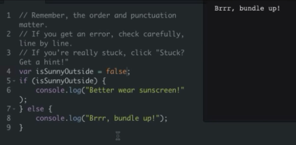

Making webpages interactive
Examples of interactive webpages
Slideshows, lightboxes, infinitely loading galleries, games, and more...

...What are some of your favorite interactive webpages?
How are interactive webpages made?

JS: Many environments
JS can be used inside many environments for many use cases:
- Browser: To make webpages interactive.
- ProcessingJS: To make drawings and animations.
- NodeJS: To make servers that render webpages and store data.
- JohnnyFive: To control robots and arduinos.
- Photoshop: To write scripts to automate image manipulation.
Each environment comes with its own set of relevant functionality and globals.
JS: What's part of the language?
The language of JS is the same across all those environments, so all of these concepts will be the same:
- Variables: how to declare variables, assign, re-assign, and local vs. global scope.
- Data types: numbers, booleans, strings, arrays, and objects.
- Functions: how to group code into functions, pass arguments to them, and return values from them.
- Conditionals: how to use if/else statements and logical expressions.
- Loops: how to use while and for loops to repeat code.
Environment: JS on Codecademy
In this environment, the only functionality is writing to a console with console.log:

Environment: JS in ProcessingJS
In this environment, there are many functions dedicated to drawing and animation:
- Shapes: like rect(), ellipse(), and line()
- Text: like text() and textSize()
- Events: like draw() and mousePressed()

Environment: JS in the Browser
In this environment, the functions are all for making web pages interactive, like:
document.getElementById("main")
document.body.innerHTML += "<img src='cat.gif'>";
window.setInterval(moveImage, 1000);
window.addEventListener("scroll", loadMorePics);